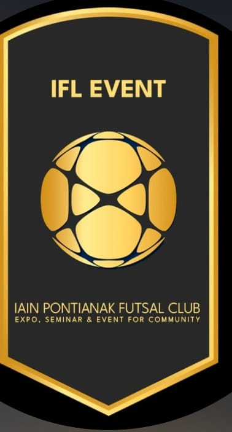

IFL CONTROL ROOM
PANEL ADMIN RESMI · BUTUH SERVER NODE.JS

ADMIN BELUM DI SINI
GitHub Pages hanya menampilkan website statis. Login dan pengelolaan event berjalan pada backend Node.js.
Deploy layanan Render dari repositori ini. Setelah deploy selesai, buka URL layanan Render dan tambahkan /admin. Masukkan username dan password yang disimpan di Environment Render, bukan di halaman GitHub Pages.